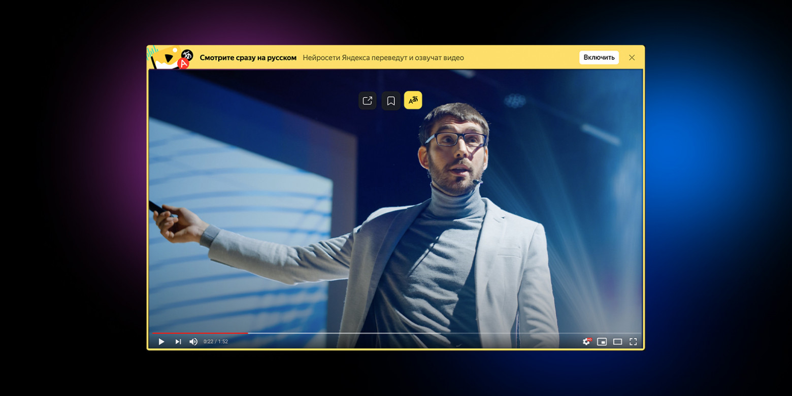
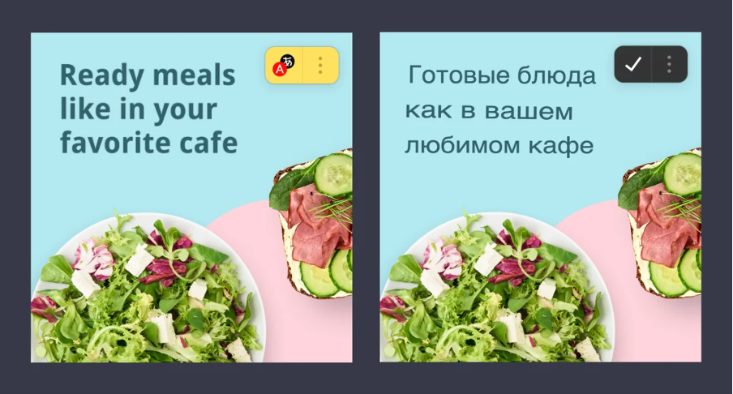
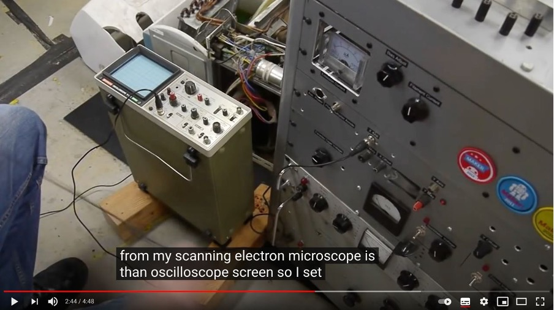
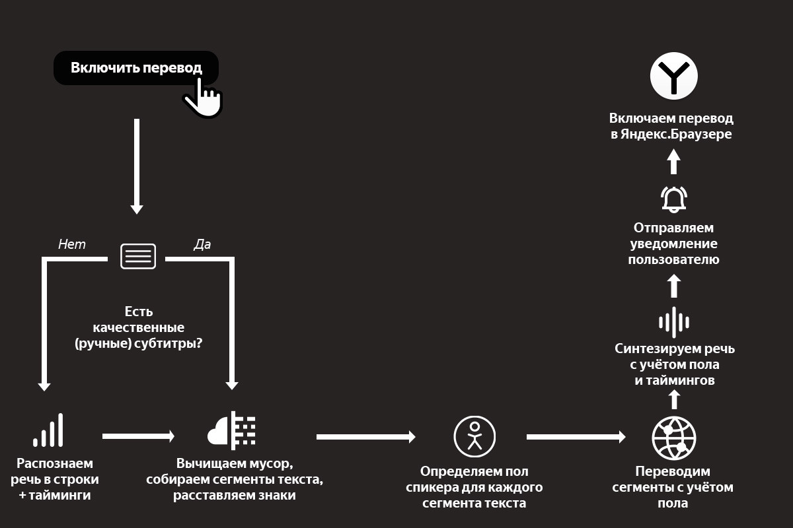

Как Яндекс помогает преодолеть языковой барьер: нейросетевой перевод видео, картинок и текста
Недавно мы впервые показали прототип переводчика видео в Яндекс.Браузере. Прототип работал с
ограниченным
числом роликов, но даже в таком виде вызвал интерес у пользователей. Теперь мы переходим к
следующему
ключевому этапу:
в новых версиях Браузера и приложения Яндекс перевод доступен для всех
англоязычных
роликов на YouTube, Vimeo, Facebook и других популярных платформах.
Сегодня я не только расскажу о том, как устроен новый переводчик видео и какие у нас планы, но и
поделюсь
предысторией. Потому что считаю, что контекст важен: мы шли к этому шагу более десяти лет. Но если
история вам вдруг не интересна,
то можете сразу переходить к разделу «Перевод видео», где я
описал
работу технологии (а точнее, целого комплекса наших технологий) по шагам.
Десятью годами ранее
В 2011 году в Яндексе решалась судьба собственного полноценного браузера. На тот момент браузеров на
любой цвет и вкус уже хватало. Но почти все они создавались «где-то там»: без оглядки на рунет и
потребности тех пользователей,
для которых английский язык и латиница не были родными. Поэтому
мы
решили создать свой браузер, который бы в числе прочего более полно поддерживал русский язык и наши
с вами «региональные» потребности. Уверен, эта фраза
звучит непонятно, поэтому ниже вас ждут
два
моих любимых примера. Они не связаны с переводом, но показательны.
Пример с поиском по странице
Русский язык отличается богатой морфологией. Падежи, род, бо́льшая свобода в построении предложений —
всё это приводит к разнообразию форм одного и того же слова и способов написать одну и ту же фразу.
При этом классический
поиск по странице, который работает одинаково во всех известных мне
браузерах,
умеет искать только точные вхождения слов в тексте. Наш поиск работает гибче и учитывает морфологию
русского языка. Наглядный пример:
Кстати, этой фиче был посвящён мой самый первый пост на Хабре в 2013-м. Как будто вчера это было.
Пример с адресной строкой
Что будет, если ввести в адресную строку [ь]? Скорее всего, браузер предложит вам отправиться в
поисковую систему и поискать там мягкий знак. Но чего на самом деле хотел человек, который набрал
[ь]? Ответ: вероятно,
он привык ходить на [m.habr.com] или [maps.yandex.ru], но забыл
переключить
раскладку на клавиатуре.
В отличие от англоязычной аудитории, нам с вами приходится жить в мире двух алфавитов и постоянно
переключаться между ними. Это приводит к ошибкам. А ошибки приводят к выбору: или ввести адрес
заново, или совершить
лишний переход в поисковую систему. Мы — за экономию времени, поэтому
учли
подобные ошибки с раскладкой ещё в самой ранней версии 2012 года. В таких ситуациях Яндекс.Браузер
исправляет раскладку «в уме» и предлагает
перейти не в поиск, а сразу и в один клик — на нужный
сайт.
Таких примеров много, но думаю, суть я передал. В любом случае все они меркнут на фоне главной проблемы, которой мы бросили вызов: проблемы языкового барьера.
Перевод текста
В интернете более миллиарда сайтов, но лишь около 9% — на русском языке. Интернет быстро растёт, но опять же — в основном за счёт иностранных сайтов. Информация, которая создаётся там, недоступна для большинства наших пользователей здесь.
Ещё тогда — в 2011-м — мы решили изменить это и помочь распространению знаний между пользователями. К
счастью, в том же году появился Яндекс.Переводчик (тогда он ещё назывался Яндекс.Перевод). В его
основе
была технология
статистического машинного перевода собственной разработки. Мы применили её и в
Яндекс.Браузере. Да, мы не были первыми: Chrome уже умел подобное. Но в нашем случае переводчик
работал
с одной актуальной для рунета особенностью.
Большинство из нас с детства учит английский язык. Кто-то овладел им в совершенстве, но многие знают
его
достаточно фрагментарно, на уровне «читаю и пишу со словарём». Поэтому для нас особенно полезна
возможность переводить не только страницы
целиком, но и отдельные фразы и слова. Так мы
пополняем
словарный запас, продолжаем совершенствовать знания. Так оно и работает в Яндекс.Браузере с первого
дня
его существования.
Перевод картинок
Перевод текста — это хорошо. Но мы не должны забывать, что текст встречается ещё и на изображениях. Например, заметная часть сайтов израильских государственных организаций предпочитает именно такой способ размещения информации. Похожую картину можно увидеть на корейских, китайских, арабских сайтах. Аналогичная ситуация с техническими характеристиками товаров в иностранных интернет-магазинах.
Особенность этой задачки в том, что для её решения нужно объединить три технологии, которые отрабатывают последовательно. Сначала с помощью компьютерного зрения найти текст на картинке и распознать его в текстовый формат (OCR), затем с помощью машинного перевода перевести текст на русский язык, ну а вишенка на торте — рендеринг перевода поверх оригинальной картинки. Тут на каждом шаге можно закопаться в самостоятельную статью, поэтому я расскажу про самое неочевидное: про то, как мы боролись за экономию ресурсов.
Итак, можно взять исходную картинку, отправить в оригинальном виде из Браузера к нам на сервер, там проделать всю-всю работу, затем вернуть вариант с уже отрисованным переводом. Это самый простой для нас вариант. Но самый плохой для пользователя. Потому что картинки в интернете могут весить очень много. Их пересылка туда-обратно — это не только трафик, но и время, а значит, тормоза в продукте.
Чтобы не раздражать пользователей, мы пошли другим, сложным путём. На стороне Яндекс.Браузера уменьшаем картинки и переводим их в чёрно-белое представление. Кроме того, формат картинки меняем на WebP, который в среднем весит на 15–20% меньше, чем JPEG. В совокупности эти меры снизили вес картинок в несколько раз. При этом качество распознавания и перевода ощутимо не упало.
Этап объединения исходной картинки с переводом мы тоже перенесли на устройство. И вот тут возникла сложность. У Браузера есть исходная, цветная картинка и текст перевода. Если просто взять и наложить чёрный (белый?) текст на цветную картинку, то в большинстве случаев получится жуть. А мы не для того длину текста и переносы строк подгоняем под оригинал, чтобы испортить всю магию цветом шрифта.
Итак, нам нужно подогнать цвет перевода под цвет оригинала. Но Яндекс.Браузер не различает текст и фон на исходной картинке, а значит, не может выбрать цвет для перевода. Наш серверный OCR видит текст, но не видит цвета, которые были потеряны в результате конвертации в ч/б.
Придумали следующее. На стороне OCR выделяем ключевые точки на картинке для фона и текста. Отправляем их координаты Браузеру вместе с переводом. Браузер на своей стороне по этим координатам определяет цвета. И уже затем выбирает для перевода цвет, который накладывается на фон.
Получилось в целом неплохо:
Перевод картинок работает на десктопе и устройствах с Android. В ближайшем будущем добавим и iOS. Ну и конечно же, продолжим совершенствовать распознавание и перевод.
Перевод видео
У нас была давняя мечта: научиться переводить ещё и видео. Люди всё чаще смотрят образовательные и научно-популярные ролики, интервью, репортажи и многое другое. Бо́льшая часть подобных видео создаётся не на русском языке. Профессиональный перевод — редкость для свежего контента в интернете. В лучшем случае пользователи получают автоматически сгенерированные субтитры. Мы же решились замахнуться на большее: на автоматический перевод и озвучку любого видео прямо в браузере.
Как и в случае с картинками, для решения этой задачи одного только машинного перевода недостаточно. Качество перевода видео сильно зависит от качества распознавания и синтеза речи. К счастью, запуск Алисы и наших умных колонок здорово подстегнул развитие этих технологий в Яндексе. Настолько, что в сентябре прошлого года мы решились запустить проект. Казалось бы, остаётся только соединить все технологии в общий процесс. Какие тут могут быть сложности, не правда ли? Сейчас расскажу какие, описав процесс по шагам (а в конце рассказа вас ждёт простая наглядная схема).
Шаг 1. Распознавание речи и предобработка текста
Пользователь нажимает кнопку переводчика, и мы начинаем обрабатывать ролик.
У нас на входе есть какое-то видео с какими-то голосами. Это может быть образовательный ролик с одним ведущим. Это может быть интервью из двух человек. А может быть и вовсе многоголосая дискуссия. Если просто перевести поток речи в текст, то получится сырой набор слов. Без запятых, без точек, без логической группировки слов в предложения, а предложений — в абзацы. И если прогнать такой текст через переводчик, то результат будет в полной мере соответствовать принципу GIGO. Поэтому мы не только превращаем аудио в текст, но и запускаем специальную нейросеть, которая вычищает мусор, группирует слова в смысловые сегменты и расставляет знаки препинания.
Кстати, мы опираемся не только на голос, но и на субтитры. Решили так: если человек загрузил к видео субтитры — то распознавание не используем: ведь тексты, написанные людьми, обычно более качественные, чем тексты на выходе у ASR. Но если субтитры сгенерированы автоматически, то игнорируем их и применяем свою технологию.
При этом даже ручные субтитры нужно пропускать через ту самую нейросеть. Как минимум потому, что в них бывает много текста, который не нужен для синтеза голоса. Например, описание звуков (*аплодисменты*, *звук сирены* и т. д.) или указание имени спикера перед каждой фразой.
Кроме того, ручные субтитры могут быть нарезаны на строки не по границам фраз, а произвольно. Приходится пересобирать текст из разных строк. Покажу пример:
На скриншоте выше вы видите две строки субтитров. Раньше мы их так (построчно) и переводили. Но на самом деле это фрагменты двух предложений, начало и конец которых прячутся в соседних строках:
The output from my scanning electron microscope is than oscilloscope screen. So I set that up and adjusted the contrast and everything.
И вот такие вещи надо уметь восстанавливать, иначе смысл перевода исказится до неузнаваемости.
Шаг 2. Биометрия
Итак, у нас на руках части неплохого текста и тайминги, которые нам ещё пригодятся. Что дальше? Перевод?
Нет: мы ещё больше усложнили себе задачку. Мы хотим, чтобы голоса у спикеров были разными: так проще воспринимать речь. Мы планируем адаптировать синтезированный голос к голосу спикера. Но на текущем этапе у нас более простое решение: мы определяем пол говорящего для каждой части текста, чтобы озвучивать их мужским или женским голосами.
Шаг 3. Машинный перевод
Теперь пора переводить. Тут в целом всё происходит достаточно стандартно, но с одной важной особенностью: мы передаём в модель переводчика ещё и информацию о спикерах, об их поле. Это нужно для того, чтобы в переводе разные спикеры говорили о себе или обращались к другим с корректным согласованием местоимений, глаголов и прилагательных.
Шаг 4. Синтез речи
Переходим к синтезу голоса. Сейчас у нас два голоса, дальше станет больше. Но самая большая сложность вовсе не в этом. Тексты на русском языке длиннее, чем на английском. Разница может составлять в среднем от 10 до 30%. Это значит, что при длительном воспроизведении мы рискуем словить существенный рассинхрон между тем, что говорит спикер на английском, и тем, что мы произносим на русском. Значит, нужно синхронизировать два потока речи. И нет, мы не стали фиксированно ускорять одну дорожку относительно другой.
Помните, чуть выше я уже говорил про тайминги, которые мы получили после анализа исходной речи? Благодаря им мы знаем, какие фразы в какой момент должны произноситься. Это позволяет нам синхронизировать речь более гибко. Работает это так. Синтез речи — многоступенчатый процесс, в котором можно выделить два самых больших этапа. На первом мы с помощью нейросетей представляем текст в виде промежуточной спектрограммы. На втором с помощью других нейросетей превращаем спектрограммы в звук. Мы используем тайминги на первом этапе, чтобы сгенерировать спектрограмму нужной длительности. При этом ускорение в первую очередь достигается за счёт сокращения бесполезных пауз между фразами и словами. И только если этого недостаточно, алгоритм ускоряет сами фразы.
Шаг 5. Уведомления
Ура, у нас готов перевод, его можно включить в Яндекс.Браузере. Расходимся? А вот и нет. Мы выстроили целый каскад из тяжёлых технологий, которые последовательно сменяют друг друга. Требуется время на работу огромных нейросетей-трансформеров, даже с учётом их распараллеливания на GPU. К примеру, когда мы делали первый подход к снаряду и собрали быстрый внутренний прототип, то видео длиной в час переводили целых полчаса. Нам удалось оптимизировать всё это дело и ускорить переводчик в несколько раз, но это по-прежнему минуты, а не мгновения. Над мгновенным переводом мы продолжаем работать, а сейчас придумали такую схему: мы не только говорим пользователю, что нужно немного подождать, но и присылаем пуш-уведомление о готовности. Такое решение удобно: можно запросить перевод, закрыть вкладку и уйти заниматься своими делами. Браузер переведёт и напомнит.
Вместо заключения
Вот наглядная схема всего процесса перевода видео:
Сейчас перевод видео доступен для английского языка и популярных сервисов. Он работает в Яндекс.Браузере для десктопа и Android, а также в приложении Яндекс для Android и iOS.
Хочется верить, что наше решение поможет пользователям хотя бы частично преодолеть языковой барьер и открыть для себя новый полезный контент, для которого ещё нет профессионального перевода. Мы продолжим совершенствовать перевод видео. У нас ещё очень много работы, поэтому любые идеи приветствуются.